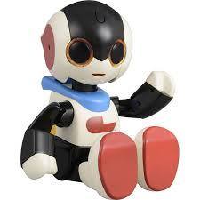

关于露娜一号机
研发一号机的目标是搭建机器学习的基础环境，严格来说和机器学习的关系不大。我们开发了展示网页，搭建了机器学习用的服务器。
我们首先尝试了在亚马逊云服务(AWS)上搭建环境，搭建成功后发现，没有GPU的服务器在处理机器学习的程序时，性能实在不敢恭维。一次识别需要花15分钟左右，还经常宕机。
AWS也提供GPU服务，但是租赁费用太高，对于没有经费的我们来说不是明智的选择。所以我们自己买硬件，一次性投资，组装了一台服务器。安装Linux系统，重新搭建机器学习的环境，搭建网络环境，我们足足花了一个月才完成了现在这一整套系统。
终于我们开始了机器学习的第一步。所谓机器学习，就是让电脑学习某种知识，学习完成后，人类给电脑一些电脑没有见过的东西时，电脑能根据自己掌握的情报来猜测这是什么东西。也就是说整个流程分为两步：训练（学习），识别。
由于是刚接触机器学习，我们决定稍稍降低一点难度，跳过训练，使用网上的别人训练好的AI，先尝试一下识别。
经过筛选后，最终我们选择了ImageNet。ImageNet是一个计算机视觉系统识别项目，是目前世界上图像识别最大的数据库。美国斯坦福的计算机科学家们使用这个庞大的数据库训练出了一个AI并免费公开。这个AI能够从图片中识别出1000种一般物体。
有人会问了：既然都有这么强大的免费AI了，你们还研发AI干什么啊？原因有二：
- 它充其量只能识别1000种物体，世界上无数的物体等着我们去识别，只要有商业需求，就有我们的存在价值。
- 它的处理方式是：一张图片里只有一个物体的前提下，AI分别给出图片是1000种物体的可能性来，我们保留可能性最高的几个答案，其余答案忽略不计。一张图片里含有多个物体时，AI仍然以一个物体的观点去识别，答案的准确度就可想而知了。
我们download了这个免费AI，几经周折，终于知道了它的用法，成功识别图片了。请尽情试用一号机，感受一下强大的AI吧。
露娜一号机

露娜一号机
生于2017/04/22，♂，稳健的性格，非常博学。
核心是VGG16（由ImageNet提供的大规模图片库训练出来的模型）。能识别多达1000种的事物。如果识别不出来，他会老老实实的告诉你，特别能让人信赖。
露娜二号机

露娜二号机
生于2017/04/29，♀，虽然说话特别冲，但是内心是很可爱的，对狗和猫有很深入的理解。
使用Kaggle提供的Dogs vs. Cats的数据库，进行了彻底的训练。导致无论你给她什么东西，她都会往狗和猫的识别上去想。
露娜三号机

露娜三号机
生于2017/05/10，♀，内向，特别喜欢花。虽然近视，却不爱戴眼镜。
使用牛津大学公开的17 Category Flower Dataset进行了彻底的训练。只要是这17种花，她应该都能正确识别。但由于她近视，如果图片中掺杂了花以外的东西，或花朵太小，她很容易就会认错。
露娜四号机

露娜四号机
生于2017/06/10，♂，严重偏科，骄傲。
核心采用FCN32s模型，训练数据来源于PASCAL2012。能识别20种事物。由于是新型号，技术上有重大的突破，所以识别的精度远高于旧机型。